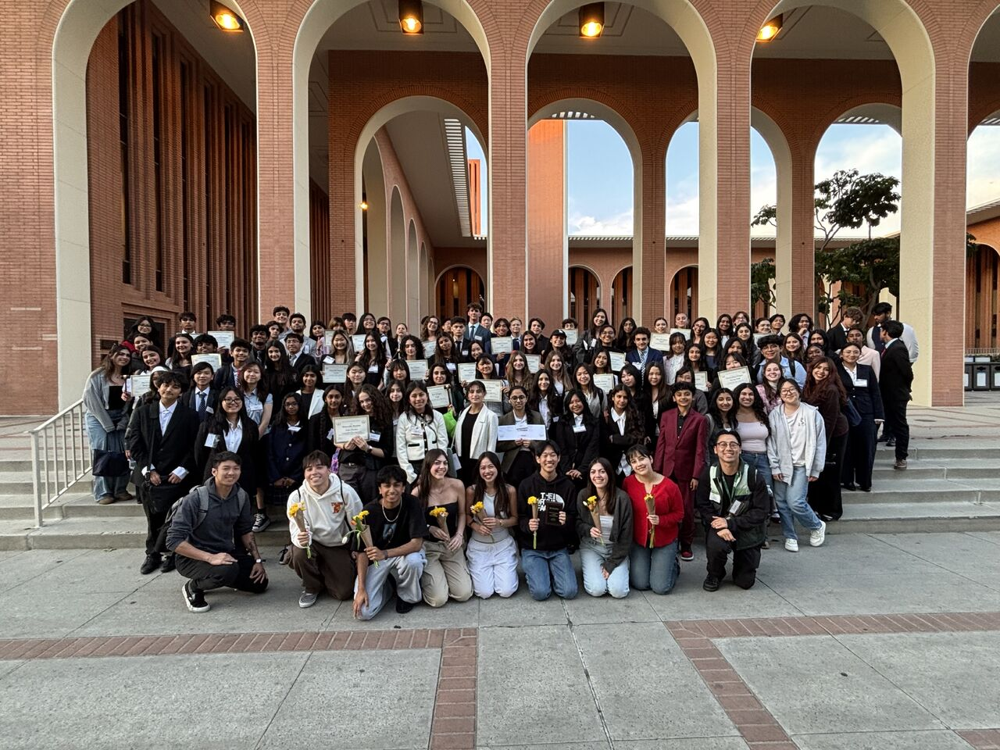
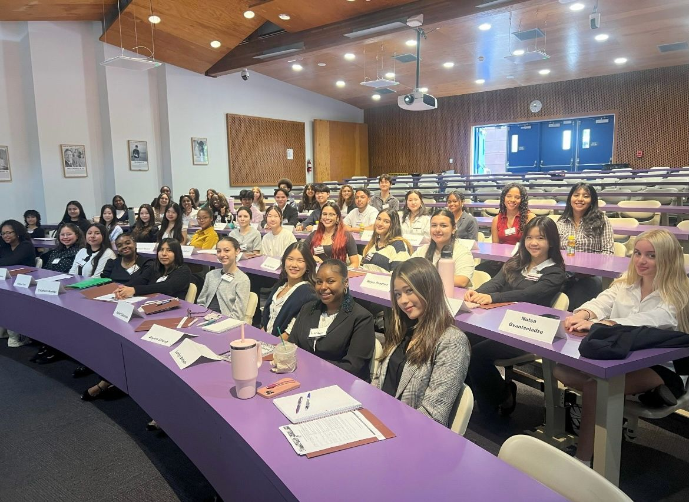
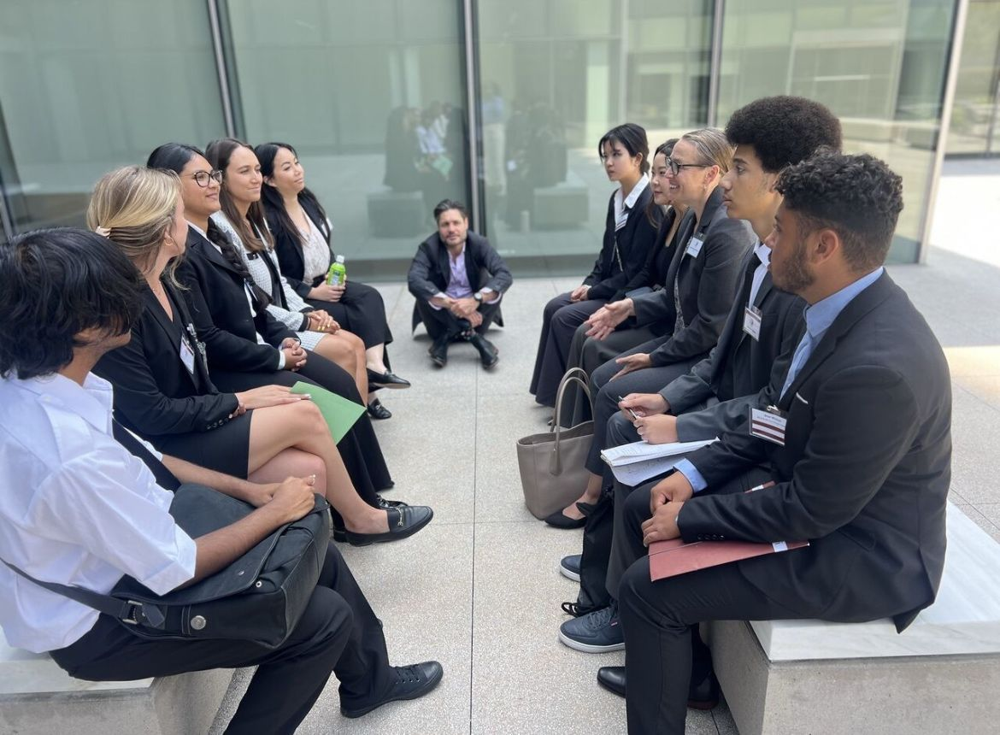
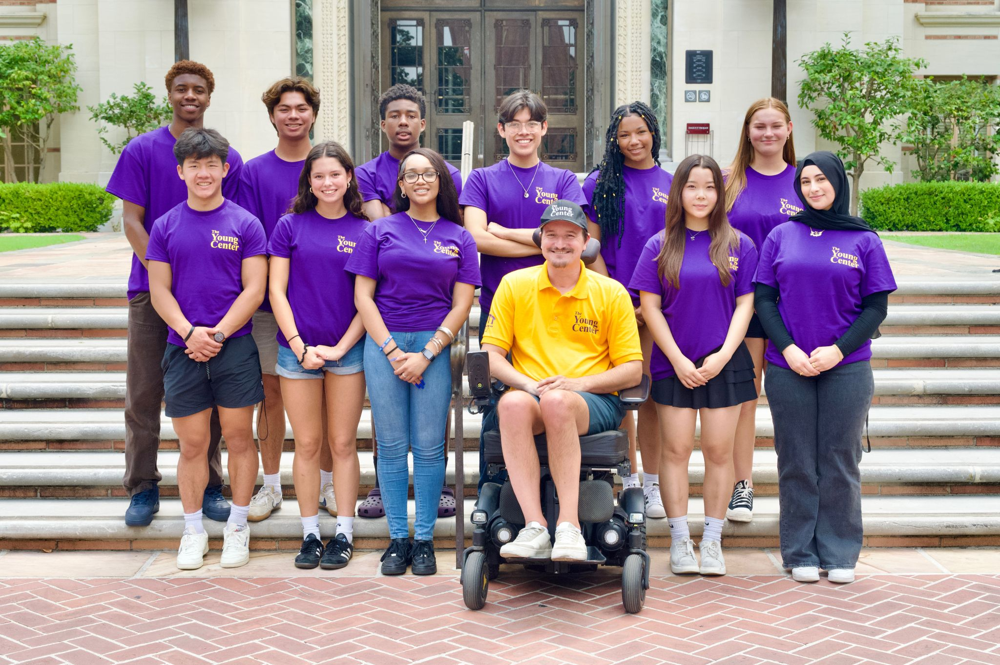

I am a first-year Political Science/International Relations student at the University of California, Riverside, with a goal of practicing law in Los Angeles. I am interested in how laws, governments, and institutions shape everyday people's lives, and I want to build a career where I can use that knowledge to advocate for others. My long-term goal is to become an attorney who represents anyone who needs help, regardless of their background or status, because I believe access to good legal representation should not depend on how much someone can pay.
My interest in law grew through hands-on experiences. Completing a law program at Loyola Marymount University gave me my first real look at legal reasoning, case analysis, and what a career in law actually involves, and it confirmed that this is the path I want to pursue. Participating in Model United Nations strengthened my skills in research, public speaking, negotiation, and diplomacy, as I represented different countries and worked with other delegates to draft resolutions on international issues. I have also become interested in entertainment law, which brings together my background in music and performance with my passion for the legal field.
Outside the classroom, I have built experience working with people in a variety of settings. As an assistant tutor, I helped students understand difficult material and build confidence in their own abilities. As a leader in training, I developed leadership and teamwork skills while learning how to guide and support others. Most recently, I worked as a merchant vendor at KCON LA 2026, one of the largest K-culture conventions in the United States, where I handled customer interactions in a fast-paced, high-volume environment and learned how to stay organized and professional under pressure.
These experiences have shaped my strengths in communication, writing, research, and cooperation. I am a hard worker who takes pride in being organized and prepared, and I enjoy collaborating with others to solve problems. At UC Riverside, I plan to get involved with pre-law organizations such as Mock Trial and Model UN to continue building my skills in argumentation and advocacy.
When I am not studying, I enjoy playing golf and tennis, keeping up with the daily news, and listening to music. Staying informed about current events is both a personal interest and an important part of my academic work, since so much of politics and law is shaped by what is happening in the world right now.
I am always looking for new opportunities to learn, grow, and connect with people in law, politics, and public service. Feel free to reach out through any of the links on this page.
• Assisted customers and handled sales in a fast-paced convention environment
• Managed merchandise and kept the booth organized during high-traffic hours
• Communicated professionally with a large, diverse audience
• Helped students understand course material and complete assignments
• Explained difficult concepts clearly and patiently
• Built students' confidence and study skills
• Developed leadership and teamwork skills through hands-on training
• Supported staff and helped guide participants in group activities
• Practiced communication and problem-solving in a team setting
• Researched and represented assigned countries on international issues
• Delivered speeches and negotiated with other delegates
• Collaborated on drafting resolutions



